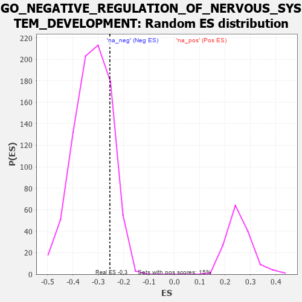

| | | Dataset | 7d |
| Phenotype | NoPhenotypeAvailable |
| Upregulated in class | na_neg |
| GeneSet | GO_NEGATIVE_REGULATION_OF_NERVOUS_SYSTEM_DEVELOPMENT |
| Enrichment Score (ES) | -0.25454557 |
| Normalized Enrichment Score (NES) | -0.7850572 |
| Nominal p-value | 0.8290398 |
| FDR q-value | 0.99769163 |
| FWER p-Value | 1.0 |
Table: GSEA Results Summary
 Fig 1: Enrichment plot: GO_NEGATIVE_REGULATION_OF_NERVOUS_SYSTEM_DEVELOPMENT
Fig 1: Enrichment plot: GO_NEGATIVE_REGULATION_OF_NERVOUS_SYSTEM_DEVELOPMENT
Profile of the Running ES Score & Positions of GeneSet Members on the Rank Ordered List
| PROBE | GENE SYMBOL | GENE_TITLE | RANK IN GENE LIST | RANK METRIC SCORE | RUNNING ES | CORE ENRICHMENT | | 1 | DISP3 | | | 110 | 1.525 | 0.0330 | No |
| 2 | LBX1 | | | 254 | 0.929 | 0.0436 | No |
| 3 | DLL1 | | | 337 | 0.760 | 0.0566 | No |
| 4 | GSK3A | | | 351 | 0.745 | 0.0779 | No |
| 5 | SUFU | | | 443 | 0.665 | 0.0868 | No |
| 6 | LRP1 | | | 470 | 0.648 | 0.1035 | No |
| 7 | PITX3 | | | 594 | 0.596 | 0.1063 | No |
| 8 | HES5 | | | 661 | 0.571 | 0.1155 | No |
| 9 | ID1 | | | 719 | 0.555 | 0.1254 | No |
| 10 | FKBP4 | | | 1390 | 0.412 | 0.0533 | No |
| 11 | CARM1 | | | 1413 | 0.408 | 0.0631 | No |
| 12 | IFRD1 | | | 1486 | 0.392 | 0.0660 | No |
| 13 | CNTN4 | | | 1571 | 0.379 | 0.0671 | No |
| 14 | RNF6 | | | 1605 | 0.373 | 0.0744 | No |
| 15 | MEIS1 | | | 1723 | 0.351 | 0.0704 | No |
| 16 | THOC2 | | | 1796 | 0.338 | 0.0717 | No |
| 17 | RNF10 | | | 1833 | 0.331 | 0.0773 | No |
| 18 | DDX6 | | | 1915 | 0.318 | 0.0769 | No |
| 19 | LSM1 | | | 2098 | 0.291 | 0.0628 | No |
| 20 | BMP7 | | | 2107 | 0.290 | 0.0707 | No |
| 21 | MYLIP | | | 2225 | 0.272 | 0.0643 | No |
| 22 | REST | | | 2308 | 0.259 | 0.0618 | No |
| 23 | SLIT2 | | | 2724 | 0.195 | 0.0153 | No |
| 24 | NR2E1 | | | 2844 | 0.177 | 0.0057 | No |
| 25 | MAP2 | | | 3074 | 0.140 | -0.0190 | No |
| 26 | MTMR2 | | | 3126 | 0.133 | -0.0213 | No |
| 27 | TLX3 | | | 3140 | 0.131 | -0.0189 | No |
| 28 | PAX6 | | | 3170 | 0.127 | -0.0187 | No |
| 29 | RFX4 | | | 3334 | 0.099 | -0.0363 | No |
| 30 | MED1 | | | 3405 | 0.089 | -0.0424 | No |
| 31 | CDK5 | | | 3480 | 0.080 | -0.0493 | No |
| 32 | NF1 | | | 3713 | 0.040 | -0.0774 | No |
| 33 | SKI | | | 3762 | 0.032 | -0.0825 | No |
| 34 | NRG3 | | | 3925 | 0.005 | -0.1029 | No |
| 35 | ROBO2 | | | 4066 | -0.018 | -0.1200 | No |
| 36 | GFI1 | | | 4168 | -0.037 | -0.1317 | No |
| 37 | GAK | | | 4249 | -0.050 | -0.1403 | No |
| 38 | FIG4 | | | 4348 | -0.068 | -0.1506 | No |
| 39 | LRRK2 | | | 4467 | -0.087 | -0.1628 | No |
| 40 | SYT4 | | | 4590 | -0.116 | -0.1747 | No |
| 41 | LMX1A | | | 4631 | -0.124 | -0.1759 | No |
| 42 | ARF6 | | | 4704 | -0.140 | -0.1807 | No |
| 43 | LHX2 | | | 4716 | -0.143 | -0.1777 | No |
| 44 | RTN4 | | | 4783 | -0.154 | -0.1813 | No |
| 45 | TERT | | | 4801 | -0.157 | -0.1786 | No |
| 46 | PTEN | | | 5262 | -0.261 | -0.2288 | No |
| 47 | EPHA4 | | | 5273 | -0.265 | -0.2219 | No |
| 48 | SOX8 | | | 5404 | -0.296 | -0.2293 | No |
| 49 | LRIG2 | | | 5460 | -0.310 | -0.2267 | No |
| 50 | ASPM | | | 5637 | -0.358 | -0.2380 | No |
| 51 | SLIT1 | | | 5735 | -0.387 | -0.2383 | No |
| 52 | TLR2 | | | 5761 | -0.395 | -0.2293 | No |
| 53 | TRPC6 | | | 5784 | -0.401 | -0.2197 | No |
| 54 | JAG1 | | | 6060 | -0.494 | -0.2393 | Yes |
| 55 | CALR | | | 6077 | -0.499 | -0.2260 | Yes |
| 56 | FEZF2 | | | 6150 | -0.519 | -0.2191 | Yes |
| 57 | THRB | | | 6178 | -0.531 | -0.2062 | Yes |
| 58 | CDKL3 | | | 6401 | -0.618 | -0.2153 | Yes |
| 59 | SOX2 | | | 6477 | -0.652 | -0.2047 | Yes |
| 60 | TRPV4 | | | 6515 | -0.668 | -0.1888 | Yes |
| 61 | KANK1 | | | 6536 | -0.678 | -0.1704 | Yes |
| 62 | PTPRS | | | 6646 | -0.738 | -0.1615 | Yes |
| 63 | CERS2 | | | 6689 | -0.756 | -0.1435 | Yes |
| 64 | GSK3B | | | 6719 | -0.768 | -0.1235 | Yes |
| 65 | PAQR3 | | | 6812 | -0.819 | -0.1099 | Yes |
| 66 | MIB1 | | | 6932 | -0.890 | -0.0976 | Yes |
| 67 | RYK | | | 7102 | -1.000 | -0.0881 | Yes |
| 68 | TSPO | | | 7194 | -1.065 | -0.0669 | Yes |
| 69 | CIB1 | | | 7280 | -1.152 | -0.0421 | Yes |
| 70 | NGEF | | | 7335 | -1.209 | -0.0117 | Yes |
| 71 | DCC | | | 7550 | -1.470 | 0.0065 | Yes |
| 72 | TTPA | | | 7575 | -1.516 | 0.0501 | Yes |
Table: GSEA details [plain text format]

Fig 2: GO_NEGATIVE_REGULATION_OF_NERVOUS_SYSTEM_DEVELOPMENT: Random ES distribution
Gene set null distribution of ES for GO_NEGATIVE_REGULATION_OF_NERVOUS_SYSTEM_DEVELOPMENT